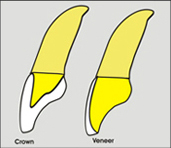
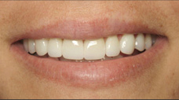

Dental veneers are custom-designed shells of tooth-like ceramic material that, when applied over the surface of a tooth, can cover worn tooth enamel, uneven tooth alignment or spacing and chips or cracks.
With veneers we can create a bright, white smile with beautifully aligned, naturally- shaped teeth. Even better, the translucent ceramic quality of today's veneers provides a more natural look than what's been available in the past.
Regardless of what causes unattractive teeth, dental veneers may solve most or even all of your cosmetic dental issues. including:
1. Worn enamel: Over time, the thin, hard white substance covering your teeth (enamel) may become worn, dulled, and discolored. Such wear and discoloration may be natural or the result of a genetic predisposition; however, it is often a result of your habits (soft drink, tea, or coffee consumption, smoking, medication use, etc.}.
2. Genetics: Certain people may be born with abnormal spacing between their teeth, or have teeth that are misshapen but otherwise healthy.
3. Uneven teeth: Uneven teeth can result from tooth grinding or general wear and tear.
WHEN ARE VENEERS APPROPRlATE7
Bonding often serves as an inexpensive and effective restoration for small chips and
cracks in the teeth. Such minor problems may be functionally and cosmetically
repaired with a composite "white filling." A composite resin material is bonded to the
tooth in order to fill in the chip or crack and better protect the surrounding tooth
structure. But for more severe cases of dullness, wear, discoloration, mild chipping,
cracking, spacing, or uneven/misshapen teeth, veneers may be recommended as a more
appropriate solution.
VENEERS OR WHITENING?
Teeth whitening may provide a white smile for mildly discolored teeth. Some people who
are interested in veneers will find that the simpler alternative of whitening, perhaps
combined with some simple orthodontic alignment, will satisfy their desire for an
improvement in their smile. The placement of veneers requires the "shaping" or
"prepping" of all teeth being fitted with the custom-designed shells. This process
permanently alters the teeth that are treated and therefore must be seriously taken into
consideration.
If you have a severe case of misshapen, dull or discolored teeth, you may have to opt for dental veneers. Veneers do have the added benefits of longevity and a proven ability to enhance the appearance of the mouth, smile, and possibly other areas of an aged face that would be better supported by properly shaped teeth. Although veneers require a much larger commitment than teeth whitening, the results are typically well worth it.
A RESTORATIVE BENEFIT TO VENEERS
In addition to being esthetically pleasing, dental veneers can also serve a functional
purpose by protecting the surface of a damaged tooth. ln some cases, veneers may
replace the need for a dental crown, eliminating the need for more invasive tooth
preparation. In some cases, because dental veneers are so thin, they might require little-
to-no tooth reshaping when bonded onto the tooth. Once veneers are bonded into place,
they are relatively strong and durable; however, care must be taken so as not to abuse
veneers because the thin porcelain shells can damage or break. We may recommend
you wear a protective appliance while your sleep. especially if you are a bruxer.